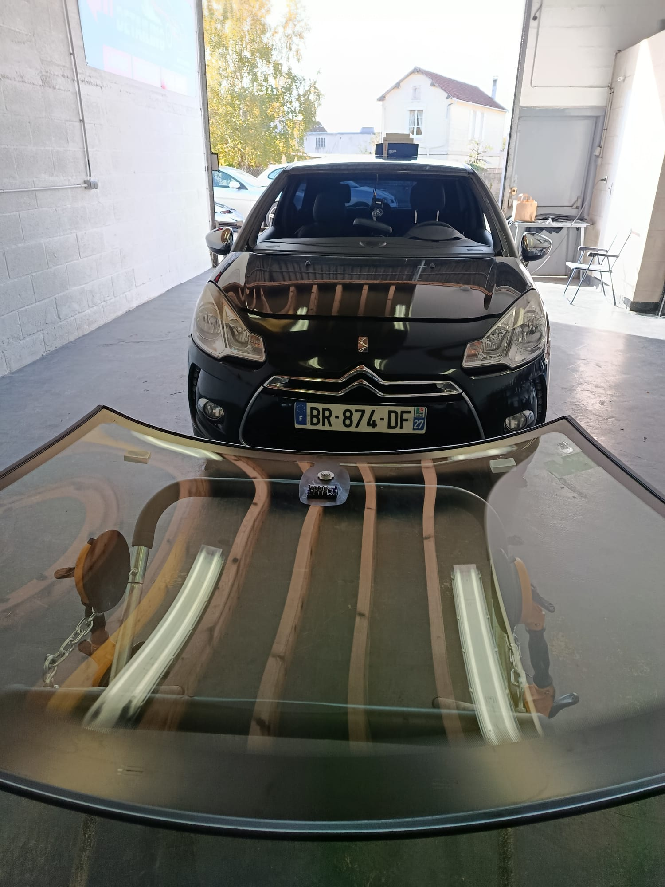

Offre client
FRANCHISE OFFERTE* 100€ A 350€ OFFERT*
Selon contrat d'assurance et éligibilité du dossier.
Assurance & démarches simplifiées
Nous vous accompagnons dans la gestion administrative liée à votre bris de glace.
Pare-brise et vitrage auto Gisors
Fast Detailing vous accompagne également dans les démarches assurance et bris de glace.

Offre client
FRANCHISE OFFERTE* 100€ A 350€ OFFERT*
Selon contrat d'assurance et éligibilité du dossier.
Nous vous accompagnons dans la gestion administrative liée à votre bris de glace.
Réassurance rapide
Créneaux planifiés au plus vite selon disponibilités.
Aide claire sur les démarches bris de glace.
Intervention à Gisors et aux alentours.
Conseils humains et suivi personnalisé.
Comment ça fonctionne
Un parcours rapide pour votre remplacement pare-brise à Gisors et la vérification assurance.
Téléphone, formulaire ou WhatsApp.
Analyse des modalités selon contrat.
Réparation ou remplacement pare-brise.
Véhicule prêt et dossier clarifié.
⭐ 5/5 sur Google · Avis clients vérifiés
Des clients satisfaits à Gisors et aux alentours. Avis clients Fast Detailing Gisors autour du detailing automobile Gisors et de la rénovation automobile Gisors.
Contact
Une fois votre besoin défini, choisissez le canal de contact adapté. Réponse claire, locale et sur rendez-vous.
Lundi au samedi
09h00 - 19h00
Gisors, Étrépagny, Trie-Château, Magny-en-Vexin
Plus d'infos
Le pare-brise reste la priorité. Retrouvez ici nos autres prestations complémentaires.
Nettoyage intérieur, extérieur, polish, optiques, vitres teintées et moto.
Toutes les photos classées par type d’intervention pour une consultation rapide.
Glissez le curseur sur des interventions réelles pour juger la qualité des finitions.
Photos réelles
Une sélection courte de photos authentiques pour montrer la qualité du travail.


Pourquoi nous choisir
Une approche artisanale, des standards premium et une exécution précise pour chaque véhicule confié.
Préparation minutieuse, contrôle visuel et finitions propres sur chaque zone.
Gamme adaptée aux surfaces intérieures et extérieures pour un rendu durable.
Interventions locales à Gisors, Étrépagny, Trie-Château et Magny-en-Vexin.
Conseil clair selon l'état réel du véhicule et vos objectifs esthétiques.
Rénovation automobile, polish, intérieur premium et optiques avec méthode.
Résultat lisible, progression visible et accompagnement humain du début à la fin.